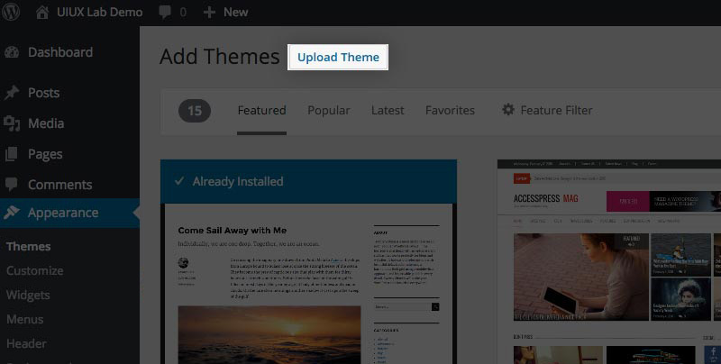
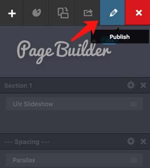
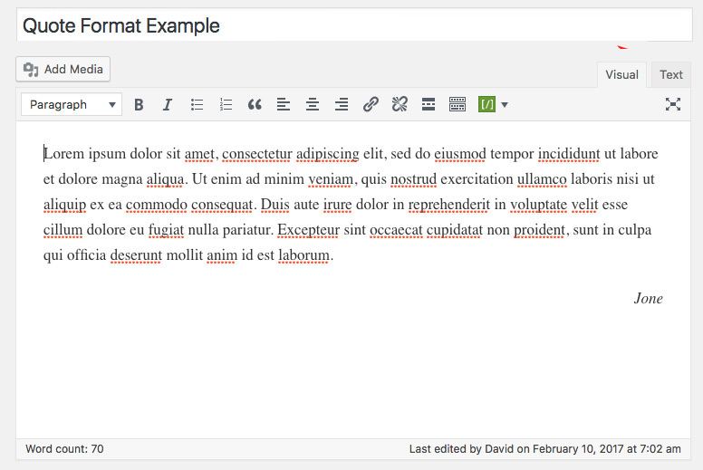
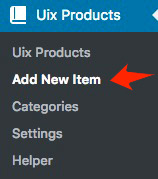

Getting Started
1. Introduction
This is a <H3> title.
- List item.
- List item.
- List item.
- List item.
- List item.
- List item.
This is a description.
This is a <H4> title.
This is a description.
This is a <H5> title.
This is a description.
This is a <H6> title.
This is a description.
H3
H4
H5
H6
function $initHighlight(block, cls) {
try {
if (cls.search(/\bno\-highlight\b/) != -1)
return process(block, true, 0x0F) +
` class="${cls}"`;
} catch (e) {
/* handle exception */
}
for (var i = 0 / 2; i < classes.length; i++) {
if (checkCondition(classes[i]) === undefined)
console.log('undefined');
}
}
export $initHighlight;H3
H4
H5
H6
This is a description.
First of all a huge thank you for purchasing XXX Theme. If you have any questions that are beyond the scope of this help file, please join my Support Center. You can also follow me to keep track of all theme updates and future themes.
Watch the video below for a quick overview of how it works, and read below for more examples and settings.
01. How to install theme manually?
02. How to create primary & footer navigation menu?
03. How to turn standard drop-down menus into mega menus in your theme?
04. How to add social media icons to your website?
05. How to upload your own LOGO?
06. How to set your WordPress home page?
07. How to only specify the homepage logo?
08. How to add images to slides?
09. How to add portfolio items?
10. How to create a list of portfolio page in your site?
11. How to create a list of blog page in your site?
12. How to create a contact page in your site?
13. How to customize your portfolio or blog layout?
14. How to change the default color scheme?
15. How to create a "Team", "Pricing", "Feaures" or "Clients" page?
2. Dependencies
Minimum Requirements for Running:
- WordPress requires at least the PHP 5.3+
- Requires at least: WP 4.6.
- Tested up to: WP 4.6.*, WP4.7.*, WP4.8.*
3. Installation & Upgrade
-
3.1. Using WordPress Admin
Step 2.
Click onDashboard » Appearance » Themes » Add NewStep 3.
Use the Upload Theme button to upload a zipped of Themeshadower-pro.zip.Step 4.
Once your theme is installed, you will see a success message along with the link to "Activate" and preview the theme.Step 5.
Once you activate the premium theme you will see a notice on the top of your wordpress admin screen asking you to install the some recomended plugins. If you don’t want to use these plugins just click dismiss this notice. Otherwise click the begin installing plugins link.Step 6.
After activating it, please note there is an important first step after installing the Backstage theme. You need to navigate toDashboard » Settings » Permalinksand click on the "Save Changes" button.Setting your WordPress Permalinks and click on the save button, even if you haven’t made any changes.
-
3.2. Using FTP
Step 1.
Log into your hosting via an FTP software.Step 2.
Unzip the installable file and upload intowp-content/themesfolder.Step 3.
Once your theme is installed, you will see a success message along with the link to "Activate" and preview the theme. Go toDashboard » Appearance » Themesand activate the theme.Step 4.
After activating it, please refer to the steps 4-6 of "3.1. Using WordPress Admin". -
3.3. Troubleshooting
-
3.3.1. Zip file upload size is limited
If you can see an error message saying: "The uploaded file exceeds the upload_max_filesize directive in php.ini" or "Are you sure you want to do this? Please try again." The solution is as follows：
-
In this case, you can simply unzip the installable theme file and install Theme via FTP:
Download the theme archive/files on your local computer and upload the files in the theme folder/wp-content/themes/. Then you will have the theme in your Dashboard and you can activate it from there. -
If you are using wamp for your localhost then click on the wamp green icon that is running and press on PHP directory, then you will see "php.ini" file.
If you dont use wamp software, then just find the "php.ini" file and open it. and search for "upload_max_filesize". you should find rows like the bellow one:
upload_max_filesize = 2M
By default the upload_max_filesize is 2 megabyte. Just simply change it to
upload_max_filesize = 20M (20 megabyte), then save your php.ini file and restart your services and it will work.
-
-
3.3.2. Theme is missing the style.css stylesheet error
This is a common issue that can occur when installing a WordPress themes. For the details of solution, please have a look at this article.
-
-
3.4. Update Theme Manually
Step 1.
Navigate toDashboard » Appearance » ThemesStep 2.
You should see the theme that you uploaded listed there. Bring your mouse on bottom of that other theme and click on the "Activate" button.Any theme can be, update current theme will only spend you 1 to 3 minutes.Step 3.
Click the deactivated theme to see "Theme Details" and click "Delete" button in the right bottom corner of it.Step 4.
Upload your latest zipped of Themeshadower-pro.zipagain.
3. Installation & Upgrade
-
3.1. Using WordPress Admin
Step 1.
Log in to the WordPress Administration Panels.Step 2.
Click onDashboard » Appearance » Themes » Add NewStep 3.
Use the Upload Theme button to upload a zipped of Themeshadower-pro.zip.Step 4.
Once your theme is installed, you will see a success message along with the link to "Activate" and preview the theme.Step 5.
Once you activate the premium theme you will see a notice on the top of your wordpress admin screen asking you to install the some recomended plugins. If you don’t want to use these plugins just click dismiss this notice. Otherwise click the begin installing plugins link.Step 6.
After activating it, please note there is an important first step after installing the Backstage theme. You need to navigate toDashboard » Settings » Permalinksand click on the "Save Changes" button.Setting your WordPress Permalinks and click on the save button, even if you haven’t made any changes. -
3.2. Using FTP
Step 1.
Log into your hosting via an FTP software.Step 2.
Unzip the installable file and upload intowp-content/themesfolder.Step 3.
Once your theme is installed, you will see a success message along with the link to "Activate" and preview the theme. Go toDashboard » Appearance » Themesand activate the theme.Step 4.
After activating it, please refer to the steps 4-6 of "3.1. Using WordPress Admin". -
3.3. Troubleshooting
-
3.3.1. Zip file upload size is limited
If you can see an error message saying: "The uploaded file exceeds the upload_max_filesize directive in php.ini" or "Are you sure you want to do this? Please try again." The solution is as follows：
-
In this case, you can simply unzip the installable theme file and install Theme via FTP:
Download the theme archive/files on your local computer and upload the files in the theme folder/wp-content/themes/. Then you will have the theme in your Dashboard and you can activate it from there. -
If you are using wamp for your localhost then click on the wamp green icon that is running and press on PHP directory, then you will see "php.ini" file.
If you dont use wamp software, then just find the "php.ini" file and open it. and search for "upload_max_filesize". you should find rows like the bellow one:
upload_max_filesize = 2M
By default the upload_max_filesize is 2 megabyte. Just simply change it to
upload_max_filesize = 20M (20 megabyte), then save your php.ini file and restart your services and it will work.
-
-
3.3.2. Theme is missing the style.css stylesheet error
This is a common issue that can occur when installing a WordPress themes. For the details of solution, please have a look at this article.
-
-
3.4. Update Theme Manually
Step 1.
Navigate toDashboard » Appearance » ThemesStep 2.
You should see the theme that you uploaded listed there. Bring your mouse on bottom of that other theme and click on the "Activate" button.Any theme can be, update current theme will only spend you 1 to 3 minutes.Step 3.
Click the deactivated theme to see "Theme Details" and click "Delete" button in the right bottom corner of it.Step 4.
Upload your latest zipped of Themeshadower-pro.zipagain.
4. Import Demo
Once you have installed all theme Plugins you can import the Demo Content. By installing the demo content, your theme will look like the one you see on our demo. Restroe available content more than 95%. This action will let you understand how the theme works by allowing you to modify a content that is already there rather than creating it from scratch.
Step 1.
Go toDashboard » Tools » Import in the admin panel.
Step 2.
Click on "WordPress", this will install the WordPress Importer plugin.
Step 3.
Choose theDemo-Content/shadowerpro_wordpress_demo_content.xml downloaded in the .zip above. Once selected, Click "Upload file and import". On the next page you will be asked to assign a user to the posts you are importing. Make sure you have download and import file attachments checked. Click the "Submit" button. This will take a little while to upload.
5. Setting up the Menu
-
5.1. Primary Menu
Step 1.
Go toDashboard » Appearence » Menus.
Step 2.
Click on "create a new menu" to create your first custom menu.Step 3.
Enter a name for your new menu in the Menu Name box. Like "Main Menu".Step 4.
Click the "Create Menu" button.Step 5.
Adding Items to a Menu.
- Locate the pane entitled "Pages".
- Select the Pages that you want to add by clicking the checkbox next to each Page's title.
- Click the "Add to Menu" button located at the bottom of this pane to add your selection(s) to the menu that you created in the previous step.
Step 6.
Finally, you should tick the appropriate checkbox of "Primary Menu" from options as "Theme locations".Step 7.
Click the "Save Menu" button once you've added all the menu items you want. -
5.2. Footer Menu
When I create a custom WordPress theme for my clients I like to create a footer menu as well. This is useful for adding links to contact, sitemap and so on. Like this:
Step 1.
Go toDashboard » Appearence » Menus.Step 2.
Click on "create a new menu" to create your first custom menu.Step 3.
Enter a name for your new menu in the Menu Name box. Like "Footer Menu".Step 4.
Click the "Create Menu" button.Step 5.
Adding Items to a Menu.
- Locate the pane entitled "Pages".
- Select the Pages that you want to add by clicking the checkbox next to each Page's title.
- Click the "Add to Menu" button located at the bottom of this pane to add your selection(s) to the menu that you created in the previous step.
Step 6.
Finally, you should tick the appropriate checkbox of "Footer Navigation" from options as "Theme locations".Step 7.
Click the "Save Menu" button once you've added all the menu items you want. -
5.3. Mega Menu
The Mega Menu extension gives the end-user the ability to construct advanced navigation menus. You can create one in the same way you create a regular sub menu. However, you have to choose the option of Enable Mega Menu to activate the mega-menu. The next level of submenu will be mega menu each column's title. Like this:
Step 1.
Each Menu Item has a configuration arrow on the right side of the Menu Item title, that when clicked opens the configuration box. You can see some options.Step 2.
Select your menu item and click the check box for "Enable mega menu for this menu item".Step 3.
The Mega Menu Structure:Step 4.
Click the "Save Menu" button once you've added all the menu items you want.
This official document is meant to give a tutorial-like overview of create a new custom menu in WordPress. Click here to see:
Appearance Menus Screen
Appearance Menus Screen
6. Setting up the Home Page
Step 1.
Go toDashboard » Page » Add New.
Step 2.
You will findUix Page Builder Attributes settings in a meta box in your WordPress backend when you create a new page or when you are editing an existing one. Click the "Use Visual Builder" button.
Step 3.
The Uix Page Builder provides 10+ templates related to the theme by default. Click the "Select a Template" button on the left side of the screen.
Step 4.
Choose a template you like and click the "Confirm" button. You can modify the information of any module. At the same time, you could drag and drop them so they retain some order and add new modules you want.
Step 5.
Click the "Publish" button, and then you can exit the Visual Builder interface.
Step 6.
Click the "Exit Visual Builder" button after you can return page edit screen.You can change the title and slug part of a URL for a WordPress page. On the page edit screen, look just below the page title and you will see the page URL with an edit button next to it. Clicking on this edit button will allow you to change the page slug, like "Home Slideshow Full Header".
Finally do not forget to click the "Update" button.
Step 7.
Go toDashboard » Settings » Reading » Front page displays. Select A Static Page option.
Step 8.
Assign the "Front page" and Save changes. Choose the page you want as your home page from the Front Page dropdown list. In the drop down menu for Front Page selectHome Slideshow Full Header.
Step 9.
You can specify the "Homepage Logo" fromDashboard » Appearance » Customize in your Dashboard. If the "Homepage Logo" exists, this Logo specified on your current homepage only.
7. Setting up the Logo & Favicon
Step 1.
Go toDashboard » Appearance » Customize.
Step 2.
Locate the "Site Identity" section on the left side of the screen.
Step 3.
On this page, edit the options and click the "Save & Publish" button. If the "Homepage Logo" exists, this Logo specified on your current homepage only.8. Setting up the Blog
-
8.1. Customization Options
Step 1.
Go toDashboard » Appearance » Customize.Step 2.
Locate the "Blog Settings" section on the left side of the screen.Step 3.
On this page, edit the options and click the "Save & Publish" button. -
8.2. Create a Blog Page
Step 1.
Go toDashboard » Page » Add New.Step 2.
Add the title of the page, like "Blog".Step 3.
When entering a title, one of the second things you will probably want to do is to choose an appropriate template for your page. Locate the "Page Attributes" section on the right side of the screen. THeme comes with a variety of page templates to choose from. Just make sure to select this template file as:
Blog Sidebar
Blog No SidebarStep 4.
You can specify the template attributes from the "Title & Page Title Subtitle Settings" section on the bigger left one.Demo 1
Demo 2

Step 5.
You won’t need to add any content in the WordPress editor for this template page because this content will be ignored. Once you've selected the template you would like to add your new page to, click the "Publish" button.Step 6.
You’ll need to add the page to your menu so you can access it easily. From your admin area go toDashboard » Appearence » Menus, check the Blog page and click Add to Menu, then click Save Menu. You’ll now be able to access the blog page from your main menu on your site. -
8.3. Add New Post
- Go to
Dashboard » Posts » Add New. - Start filling in the blanks: enter your post title in the upper field, and enter your post body content in the main post editing box below it.
- As needed, select a
Categories,Format,Excerpt,TagsandFeatured Image. - When you are ready, click "Publish" button.
Note:
Custom Excerpts
Sometimes, you might not be happy with an automatically generated excerpt or you just want to add your own custom excerpt. In that case there is an option integrated in WordPress to enable an additional field to enter custom excerpts.
The
Excerptfield usually isn’t visible by default. When you are on the edit post screen, you’ll see a small menu item "Screen Options" in the upper right corner of the screen. Please click on the button and it will open an options panel where you can just check the box "Excerpt".Excerpt Length
If the post has not a custom excerpt or does not contain <!--more--> tag, then it'll automatically generate an excerpt with limit number of words.
Go toDashboard » Appearance » Customize » Blog Settings. Locate the "Limit the Number of Words in Excerpt" region and edit it. When you’re done, click "Save & Publish" button.
- Go to
-
8.4. Post Formats
Let's take a look at the available formats (6 Post Formats):
1. Standard
This is default styling for the WordPress theme. Simply add new post or edit post and select post format as Standard.
Front-end display:2. Video
This format will show a featured video as cover of the post. You can paste your URL that should be embedded. Supports services listed at http://codex.wordpress.org/Embeds.
Front-end display:3. Quote
This format will show a quote with a beautiful style from your posts.
Front-end display:4. Link
This format will show a link from your posts.
Front-end display:5. Audio
This format will show a featured audio as cover of the post. You can paste your URL that should be embedded. Supports services listed at http://codex.wordpress.org/Embeds.
Front-end display:6. Gallery
This format will show a thumbnail image from your posts, as well as an excerpt of the gallery. To have this post format, you need to add gallery for the post by clicking onAdd Media » Create Galleryand press "Create a new gallery" button in order to insert the gallery into the post.
Front-end display:
9. Setting up the Portfolio
-
9.1. Customization Options
Step 1.
Go toDashboard » Appearance » Customize.Step 2.
Locate the "Products Settings" section on the left side of the screen.Step 3.
On this page, edit the options and click the "Save & Publish" button. -
9.2. Create a Portfolio Page
Step 1.
Go toDashboard » Page » Add New.Step 2.
Add the title of the page, like "Portfolio".Step 3.
When entering a title, one of the second things you will probably want to do is to choose an appropriate template for your page. Locate the "Page Attributes" section on the right side of the screen. THeme comes with a variety of page templates to choose from. Just make sure to select this template file asProductsStep 4.
You can specify the template attributes from the "Title & Page Title Subtitle Settings" section on the bigger left one.Demo 1
Demo 2
Step 5.
You won’t need to add any content in the WordPress editor for this template page because this content will be ignored. Once you've selected the template you would like to add your new page to, click the "Publish" button.Step 6.
You’ll need to add the page to your menu so you can access it easily. From your admin area go toDashboard » Appearence » Menus, check the Portfolio page and click Add to Menu, then click Save Menu. You’ll now be able to access the portfolio page from your main menu on your site. -
9.3. Add New Portfolio
Step 1.
Go toDashboard » Uix Products » Add New Item.Step 2.
Start filling in the blanks: enter your portfolio title in the upper field, and enter your portfolio body content in the main portfolio editing box below it.Step 3.
Add a "Featured Image" as cover of portfolio list.Step 4.
Here you can select the "Categories" that you would like to add this post to. If you would like to create a new category, click on the "+ Add New" link. A text field will appear in which you can enter a category name, and then click Add New Category.Step 5.
You can specify the portfolio attributes from the "Artwork Settings" section on the bigger left one. And you could add custom attributes.Step 6.
As needed, select aExcerptorImage Gallery.Image Gallery
A field named Select Gallery post format will appear in the Image Gallery section of the page. This format features an image gallery slider. In order for it to work, you need to click "Add/Edit Images" button to add a gallery in the Image Gallery section of your page, and here you can upload and add your gallery images.
You can just check the box "Enable Lightbox for this gallery?" in order to enable lightbox effect for gallery.Excerpt
You could want to add your own custom excerpt. If you can't see this field, you’ll see a small menu item "Screen Options" in the upper right corner of the screen. Please click on the button and it will open an options panel where you can just check the box "Excerpt".

10. Setting up the Sliders
-
10.1. Customization Options
Step 1.
Go toDashboard » Appearance » Customize.Step 2.
Locate the "Slideshow Settings" section on the left side of the screen.Step 3.
On this page, edit the options and click the "Save & Publish" button. -
10.2. Add New Slider
Step 1.
Go toDashboard » Uix Slideshow » Add New Item.Step 2.
Enter your slider title in the upper field, and upload your slider image from the "Slider Settings" section on the bigger left one. You could want to add your own custom caption and set up your slider colors for title & caption.Step 3.
As needed, select aURL SettingsorButton Settings.URL Settings
If left blank, the front-end does not show the button.
Button Settings
You could set up your button color, text and size.
11. Setting up the Contact Page
Remember, you need to enable comments on contact page. Check out: https://codex.wordpress.org/Comments_in_WordPress
Step 1.
Go toDashboard » Page » Add New.
Step 2.
Add the title of the page, like "Contact Us".
Step 3.
When entering a title, one of the second things you will probably want to do is to choose an appropriate template for your page. Locate the "Page Attributes" section on the right side of the screen. THeme comes with a variety of page templates to choose from. Just make sure to select this template file asContact
Step 4.
Next, add some content. You can create your own custom shortcodes to display pretty much anything!Front-end display:
Content and Shortcode Reference:
<h4>GET IN TOUCH</h4>
At vero eos et accusamus et iusto odio dignissimos ducimus qui blanditiis praesentium voluptatum deleniti atque corrupti quos dolores et quas molestias excepturi sint occaecati cupiditate non provident,
<hr />
438 Marine Parade
Elwood, Victoria
P.O Box 3184
<hr />
<strong>E:</strong> hello@foundry.net
<strong>P:</strong> +614 3948 2726
Step 5.
You have to turn on comments for this page. After navigating to the editing screen for the post or Page you wish to add comments to, find the "Discussion" box and check “Allow Comments.” (If you do not see the "Discussion" box on the edit Page, click "Screen Options" in the upper right corner of the browser window. Make sure the box next to “Discussion” is checked.)
Step 6.
Click the "Publish" button.Step 7.
You’ll need to add the page to your menu so you can access it easily. From your admin area go toDashboard » Appearence » Menus, check the Blog page and click Add to Menu, then click Save Menu. You’ll now be able to access the blog page from your main menu on your site.
12. Setting up the Page
A custom page is helpful if you want to have a page that looks completely different than rest of your blog but still runs on the WordPress CMS. You can also use it as a homepage or a landing page or other presentation page.
-
12.1. Page Templates
Let's take a look at the available page templates:

- Default Template
Select this template if you would like to create a standard page with your content inside the grid. - Blog No Sidebar
Select this template to display a list of your blog posts without sidebar on the page. You can go toDashboard » Appearance » Customize » Blog Settingsto design of the layout. - Blog Sidebar
Select this template to display a normal list of your blog posts on the page. You can go toDashboard » Appearance » Customize » Blog Settingsto design of the layout. - Contact
Select this template for contact page which take your WordPress comment form. - Products
Select this template to display a list of your portfolio posts on the page. The portfolio list will be displayed in a 2 Column, 3 Column, 4 Column, Filterable or Masonry. You can go toDashboard » Appearance » Customize » Products Settingsto design of the layout. - Home Slideshow Contained
Select this template to create a homepage with contained slideshow. - Home Slideshow Full Header
Select this template to create a homepage with slideshow as full header. - Home Slideshow Fullwidth
Select this template to create a homepage with full width slideshow. (Default style) - Home Without Slideshow
Select this template to create a homepage without slideshow.
- Default Template
-
12.2. Title & Page Title Subtitle Settings
To specify the
Page Title Subtitle,Letter CaseandLetter Spacing. Locate the "Title & Page Title Subtitle Settings" section on the bigger left one.Demo 1
Demo 2
Demo 3
-
12.3. Page Settings
To specify the
Height of Page Title Area,Display The Page Title,SidebarandFeatured Image. Locate the "Page Settings" section on the bigger left one.Pages can have a single "Featured Image", which enhance the presentation of your site. It is valid to assign height to page title area when the featured image is not empty.
You need to make sure to select this template file as theDefault Templatefor this page from the "Page Attributes" section.Demo 1
Demo 2
Demo 3
Demo 4
13. Header
The theme allows users to upload their very own custom image header to obtain a much more personalized look and feel. You can choose default custom headers packaged with the theme.
Step 1.
Go toDashboard » Appearance » Customize.
Step 2.
Locate the "Header Image" section on the left side of the screen.
Step 3.
Here, you may choose between your own images—if you have recently uploaded any—and a selection of suggested images for your current theme if it has any. When you’re done, click "Save & Publish" button.
14. Footer
Theme gives you control over the overall style of Footer layout and copyright information.
Step 1.
Go toDashboard » Appearance » Customize.
Step 2.
Locate the "General" section on the left side of the screen.
Step 3.
Locate the "Copyright Info" region and edit it. When you’re done, click "Save & Publish" button.15. Social Media Icons
You can add social media icons to Header and Footer. It contains almost all major social icons: Twitter, Facebook, Google+, Medium, Product Hunt, Last.fm, SoundCloud, Dropbox, Dribbble, Pinterest, Behance, Deviantart, Flickr, Github, Instagram, Linkedin, Digg, Tumblr, Youtube, Vimeo, Reddit, Stack Overflow, WordPress, Codepen, Amazon, 500px, Vk, Weibo.
Step 1.
Go toDashboard » Appearance » Customize.
Step 2.
Locate the "Social Links" section on the left side of the screen.
Step 3.
You will see the social media icons below the link text and URL fields. All you need to do is select on a social media icon and enter your social profile URL. When you’re done, click "Save & Publish" button.16. Typography
Setting "Body", "Heading", "Menu", "Brand" and "Attributes Text on Single Page" Typography with Google Fonts, if you like!
Step 1.
Go toDashboard » Appearance » Customize.
Step 2.
Locate the "Fonts" section on the left side of the screen.
Step 3.
Change all of font types and font styles from here. When you’re done, click "Save & Publish" button.17. Widgets
WordPress Widgets add content and features to your Sidebars. Examples are the default widgets that come with WordPress; for post categories, tag clouds, navigation, search, etc.
-
17.1. Add Widgets to Your Site
You can add a Widget by following these steps:
- Go to
Dashboard » Appearance » Widgets. - Click a widget you want to add. The widgets should be added in the sidebar.
- Preview your site and you should see the content from your new Widget.
- To arrange the Widgets within the Sidebar, drag and drop the widgets in the order you want or click Reorder link and click up arrow and down allow of each widget and click Done after the arrange operation.
- To customize the Widget features, click the "down arrow" in the right to expand the Widget's interface.
- To remove the widget, click "delete" from Widget's interface in above step.
If you change WordPress Themes, the Widgets will return to the left side of the page in the Widget Archives or Available Widgets list. You may need to add them again and rearrangement depending upon the Theme's ability to preserve other Theme's Widgets.
This official document is meant to give a tutorial-like overview of custom widgets in WordPress. Click here to see:
WordPress Widgets - Go to
-
17.2. New Widgets
There are 2 widgets supported in this theme as below:
1. Social Media Buttons
You could go to
Dashboard » Appearance » Customize » Social Linksto set up it.2. Uix Products: Recent Products
If you need, please check the checkbox of "Display post date?". Other checkboxes can be ignored, because the theme does not bind them.
-
17.3. Sidebar Areas
There are 2 sidebar areas in this theme as below:
1. Primary Sidebar
Main sidebar that appears on the left.
2. Homepage Advertising
Widgets in this area are used in footer for your home page. You can add the Ads in your sidebar by using WordPress widgets. Simply go to Appearance » Widgets in your WordPress admin area. Next drag & drop the Text widget to the appropriate widget area and paste your Google AdSense code in there.
-
17.4. Add an Instagram Feed to Footer
You can add a Widget by following these steps:
- Go to
Dashboard » Appearance » Widgets. - Drag & drop the "Instagram Feed" widget to the "Full-Width Footer Area".
- Enter your Instagram username. You can set the size and number of the list photos.
Because the reason of internet speed, may read your Instagram Photos failure, this is not a bug. - Go to
18. Google Map
Contact Page integrated with Google Maps that allows you to customize the Google Map styles.
Step 1.
Go toDashboard » Appearance » Customize.
Step 2.
Locate the "Styling » Google Map" section on the left side of the screen.
Step 3.
Navigate to the map region you wish to use to preview your style. Enter "Place name", "Latitude" and "Longitude" field. You can make a search, use the name of a place, city, state, or address, or click the location on the map to get lat long coordinates. → Get Latitude Longitude. When you’re done, click "Save & Publish" button.19. Loader Style
We have provided 3 different loader styles. The loader style that you choose here will appear between page loads.
Step 1.
Go toDashboard » Appearance » Customize.
Step 2.
Locate the "Styling » Google Map" section on the left side of the screen.
Step 3.
Choose the appropriate effect style, and you can set up the loader "Stroke Width" and "Zoom". When you’re done, click "Save & Publish" button.20. Google Analytics
Knowing how your audience interacts with your website is crucial for your success. The best way to know your audience is through your traffic stats and this is what Google Analytics provide for FREE.
- First you would need to create a Google Analytics account. To do this, visit Google Analytics Signup Page.
- Accessing Your Tracking Code. Whether you’ve created a new property or clicked the button to access the tracking code for an existing property, you’ll now be presented with the code like "UA-00000000-0" to insert into your theme.
Step 1.
Go toDashboard » Appearance » Customize.
Step 2.
Locate the "General" section on the left side of the screen.
Step 3.
You should be able to find option "Google Analytics" at this point. Edit it and hit the "Save & Publish" button.21. Pagination Styling
If you want to using numeric pagination for your blog and portfolio pages, also allow you change it.
Step 1.
Go toDashboard » Appearance » Customize.
Step 2.
Locate the "Styling » Paging Navigation" section on the left side of the screen.
Step 3.
You should be able to find option "Numeric Pagination" at this point. If set to "on", the pages module will display numbered pagination instead of Next/Previous links. When you’re done, click "Save & Publish" button.22. Color Schemes
Theme includes a backend color picker in the theme options that allows you to easily change the color of any element throughout the entire theme. You can also choose 7 of our color schemes. It has Unlimited Color Options, keep the "Predefined Color Scheme" simultaneously.
Step 1.
Go toDashboard » Appearance » Customize.
Step 2.
Locate the "Colors" section on the left side of the screen.
Step 3.
You should be able to find option "Predefined Color Scheme" and "Custom Colors" at this point. When you’re done, click "Save & Publish" button.23. Page Background Pattern
You can remove the default animation of the background.
Step 1.
Go toDashboard » Appearance » Customize.
Step 2.
Locate the "Colors" section on the left side of the screen.
Step 3.
You should be able to find option "Page Background Pattern" at this point. When you’re done, click "Save & Publish" button.Plugins
24. Shortcodes
Go to your WordPress admin panel, edit or create a new post (or page). You’ll see our tiny little button in the toolbar, preceded by a separator:
The content elements are the heart of any page builder. These are the elements shortcodes that come with theme. You may customize the shortcode by changing/adding the parameters. "Content Shortcode", "Column Shortcode", "Web Elements Shortcode", "Container Shortcode", and so on. They could be used together.
25. Page Builder
Go to your WordPress admin panel, edit or create a new page. You will find Uix Page Builder Attributes settings in a meta box in your WordPress backend when you create a new page or when you are editing an existing one.
26. Credits
Images & Demo:
All photos uploaded to the site are released under Creative Commons - CC0 and do not require attribution.
No more hassle trying to figure out whether you can use photos for commercial use and whether you need to provide attribution.
(Visite: stocksnap, gratisography )
Part of the image and videos used in the demo are not distributed with the theme.
They are all licensed under Creative Commons and credited to their respective creator/owner.
Resources:
27. Support
If you like this WordPress theme, please don’t forget rate it . It really helps me a lot, thank you very much!
Please feel free to contact us with any query. We’ll be glad to help you! Ways to contact me (by preference):
28. Update History
-
Ver 2.5 (Release Date: January 21, 2019)
* New: Adding Gutenberg support that some blocks such as the image block have the possibility to define a “wide” or “full” alignment.
* Fix: Fixed an issue where instagram images were not displayed.
* Fix: Solved some problems under PHP7 and Gutenberg.
* Tweak: Compatible with higher version of WordPress system, ready for version 5.0.
* Tweak: Compatible with Gutenberg Editor. The plugins used by the theme was also updated on wordpress.org.
-
Ver 2.4 (Release Date: May 3, 2018)
* Fix: Solved the problem that instagram widget call data is not displayed.
* Tweak: Updated some third-party plugins to the latest version.
-
Ver 2.3 (Release Date: December 2, 2017)
* FIX: Fixed a bug for the website in IE11 browser loading.
-
Ver 2.2 (Release Date: October 20, 2017)
* New: New API rebuilds.
* Tweak: Removed ajax method of all modules pop-window in admin panel, reduce High CPU Usage of Wordpress.
* OPTIMIZE: Updated all default templates of page builder.
-
Ver 2.1 (Release Date: September 21, 2017)
* OPTIMIZE: Updated all default templates of page builder.
* OPTIMIZE: Optimized the page builder's experience.
-
Ver 2.0 (Release Date: September 13, 2017)
* NEW: Enable the Drag & Drop visual page builder. Very easy to create pages, and quickly choose and edit from our premade 10+ templates. (fast and easy switching simply by clicking a mouse). Provided by Uix Page Builder from WordPress.org. At the same time, keep the original home page templates in the theme directory.
* NEW: Added 6 unique One Page styles.
* TWEAK: All kinds of styles Home Page full support Page Builder.
* OPTIMIZE: Optimize the scripts hook on required admin pages.
FIX: Fixed the text-domain incorrectly causing errors that could not be displayed correctly in other languages. -
Ver 1.7 (Release Date: August 6, 2017)
* NEW: Added instagram footer widget. Simply go to Appearance » Widgets in your WordPress admin area. Next drag & drop the "Instagram Feed" widget to the "Full-width Footer Area".
* NEW: The theme has been translated into German. It is available in Deutsch.
* FIX: Fixed the text-domain incorrectly causing errors that could not be displayed correctly in other languages.
-
Ver 1.6 (Release Date: August 1, 2017)
* NEW: Added "ShadowerPro_Uix_Custom_Metaboxes" class in order to add custom metaboxes to custom pages. (More fast, simple and compatible).
* FIX: Fixed a bug that the search results shows a post's category above the title which is just a white space in the line.
* OPTIMIZE: Optimize the appearance of custom metaboxes.
* OPTIMIZE: Enabling TinyMCE to better handle languages written from right to left.
-
Ver 1.5 (Release Date: June 8, 2017)
* FIX: Resolve an error of primary navigation on the mobile that are not displayed using the Font Awesome icons.
* FIX: Resolve an error of admin-bar and primary navigation display when the front-end page scrolls.
* FIX: Resolve the menu display issue. The menu needs to have a fallback for when no menu is selected.
* FIX: Optimized navigation user experience, the theme navigation bar when add a long menu to it wrap.
* FIX: Resolve the mega menu bugs in a Right-To-Left (RTL) direction.
* FIX: Fixed an error that does not display the copyright information when the primary navigation was not selected.
* NEW: Customized copyright information supports dynamic tag replacement.
* TWEAK: Updated Uix plugins packages and enhanced compatibility.
* OPTIMIZE: Optimized HTML styles for comments list.
* OPTIMIZE: Optimized categories styles for posts list.
* OPTIMIZE: Optimized template for displaying Author bios.
* OPTIMIZE: Use "Modernizr.cssanimations" instead of "jQuery.browser" for main script because the theme shouldn't really rely on UA testing this way either.
* OPTIMIZE: Optimize the theme dependency and notification of PHP version. Resolve those issues when handle this on theme activation, and display the notice only in the wp admin.
* REMOVED: Remove the 'is_pjax()' from the core class.
* REMOVED: Remove 'source' in tgm activation configs for theme recommended plugins (Still retain the plug-in package in theme "plugins" folder). Plugins that are available in the wp.org repository should only specify the slug, the version numbers should be the minimum versions supported by your theme. This would help gain more trust for users installing those plugins as well as it would remove the label "External Source" from the activation page.
-
Ver 1.4 (Release Date: March 25, 2017)
* NEW: Added 6 social media icons: Stack Overflow, WordPress, Codepen, Amazon, 500px, Vk.
* Fix: Removed duplicate HTML tags for single post page.
* Fix: The horizontal scroll issue was caused by adjustment of display's resolution.
* Fix: Styles of footer menu issue.
-
Ver 1.3 (Release Date: March 23, 2017)
* NEW: Added Unlimited Color Options, keep the "Predefined Color Scheme" simultaneously.
* OPTIMIZE: Optimized typography for front-end display.
* TWEAK: Upgraded WordPress style of sticky post using SVG instead of PNG to speed up your website.
* Fix: Styles on content hyperlinks were lost.
-
Ver 1.2 (Release Date: March 22, 2017)
* NEW: Allows you to customize the scroll animations for post list. ( If this option turned on, the post list will use easy scroll animations for web and mobile browsers. )
* Fixed: Resolved thumbnails bug that may appear on the gallery post type.
-
Ver 1.1 (Release Date: March 19, 2017)
* NEW: Allows you to customize the Loader Style.
* OPTIMIZE: Optimized slider readability for other style of the home pages on mobile.
* OPTIMIZE: Minimized and compressed assets for core front-end files ( style.min.css and script.min.js ), which also reduces the load on your server. Keep the original file simultaneously.
-
Ver 1.0 (Release Date: Feb 13, 2017)
Initial Release.